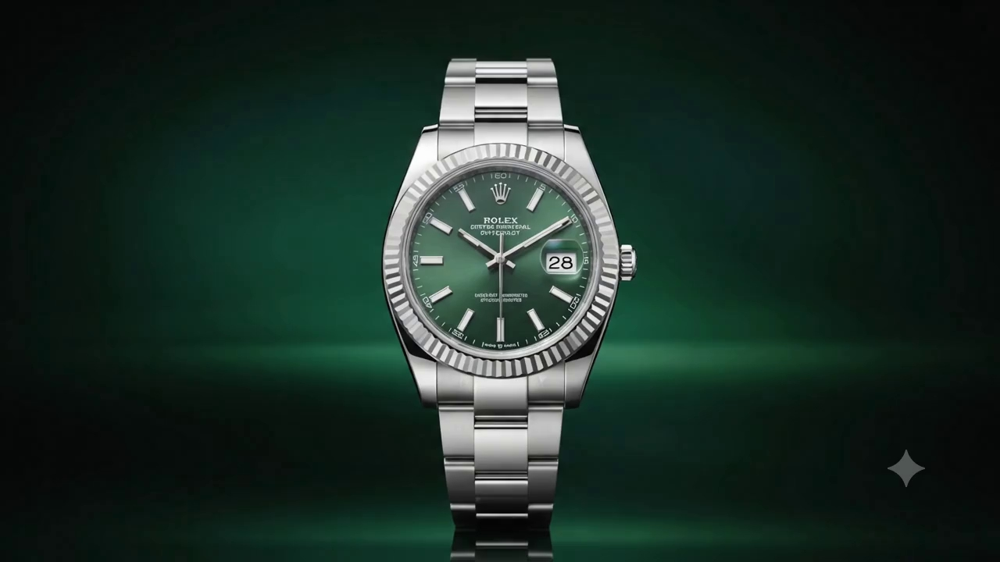

A mechanical movement with self-winding capabilities, entirely developed and manufactured in-house.
Precision tested after casing to exceed COSC official standards, ensuring world-class accuracy.
Equipped with a high-capacity barrel and Chronergy escapement, providing weekend-proof longevity.
Protected by the patented Twinlock double waterproofness system screwed securely into the case.
Originally engineered to screw the bezel onto the case to ensure water resistance, the fluting has become a signature aesthetic marker unique to Rolex models.
Named after the one-eyed giant of Greek mythology, the Cyclops lens magnifies the date display by two and a half times for instantaneous reading.
Specially developed by the brand, Oystersteel belongs to the 904L steel family, superalloys most commonly used in high-tech and aerospace industries.

Customize the iconic sunray brush dial to reflect your personal style. Select from our signature palettes below.